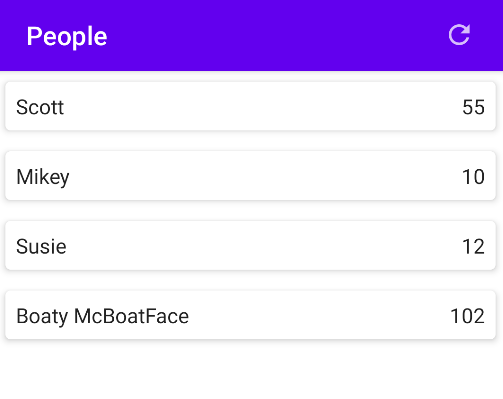
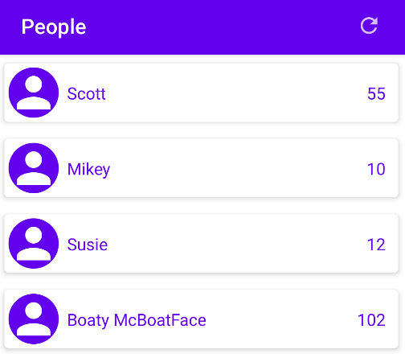
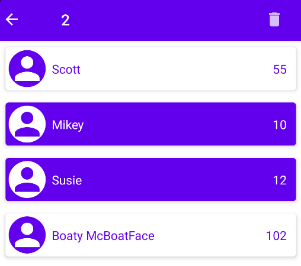

Compose Lists
So far, we've displayed lists of data by iterating through all of the data and emitting Text nodes. Seems to work ok, but what happens when that list gets big?
When we emit to the composition tree, the Compose UI will render all of the nodes, even if some are offscreen. If there are relatively few offscreen nodes, it's not a big deal, but as the number of nodes increase, the added processing time can contribute to jank in the UI. We need a better approach to manage offscreen parts of our UI.
We'll look at this from the point of view of fixed and dynamic UIs.
-
A fixed UI is one that presents all of its data all the time. Think about a data-entry form. Perhaps you're editing user shipping information. There are typically a fixed number of fields in the UI. Depending on the device configuration (in this case, the screen size and user-selected font scaling), we might not be able to fit all fields on the screen at once. We can make the screen scroll, but all data is always rendered.
-
A dynamic UI is one that only displays part of the available, typically just what will fit on the screen (or a bit more for smooth animation). This is most apparent when presenting data from a database, such as songs in a playlist. The UI will repeat chunks of controls for each item, and can quickly grow past the screen bounds. The dynamic nature of the UI reduces the amount of rendering needed.
Fixed UIs
First, let's think about a fixed UI. We're asking the user to enter shipping information, which may or may not all fit on the screen. If the device has a large screen or the user is using a "small" font setting, we might get all fields on the screen. But as the screen shrinks or the user chooses "large" fonts, it's likely that some parts of the UI won't fit.
There are a few things you might do about this:
-
Mark your UI as scrollable. For example, if you use a
Columnto hold your fields, you can mark the column as scrollable:Column( modifier = Modifier .padding(paddingValues) .verticalScroll(rememberScrollState()) ) { ... }This is a good idea whenever using a
Column(or other layout) that may need to be scrolled to see all of its content. Keep in mind that devices come in many different form factors, and users will sometimes choose extra-large font sizes to make reading more comfortable.If, on the other hand, you're declaring a UI that has fixed content that always appears on the screen, and scales with the screen size to force it all to fit, you would skip the scroll modifier. (This might apply when writing a full-screen game, for example.)
-
Break the UI into more screens, each with fewer fields. If you have a long, scrollable, UI with many fields, double-check that the fields are all related. If grouping fields makes sense, you might consider creating more than one screen. You could
-
Create a "main" screen for that part of the UI, with buttons or links that open the grouped detail. For example, a shipping screen might have buttons to open an address-editor screen and present shipping rate choices.
-
Create a series of screens with "next"/"previous" actions to move between them. For example, a "purchase" might be presented as a series of screens:
- Shopping cart display
- Shipping address
- Shipping rate options
- Credit card entry
- Confirmation
-
Choosing the right layout can be tricky. If you have some User-Experience (UX) Designers in your company, talk with them about what might make a good user interface. They may help set up an A-B study to test out alternatives with a user (or if you don't have dedicated UX folks, consider such a study yourself, or bounce ideas off other developers to see what might feel the best.)
If it feels like the best interface for your application would be a long scrolling list of fields, use a scrollable Column and test its performance. If the list of fields is really long and is causing performance issues, you may want to consider treating the fields as items in a list, and follow the next section.
Dynamic UIs
The amount of available data is often outside of your control. You might have no idea if your application would typically display a handful of items, or a huge number.
Ideally, we would only emit the nodes to the composition tree if they are visible. To do this, we need to track which items are visible and as the user scrolls, and properly update them if the data behind them changes.
When we emit nodes to the composition tree, Compose typically keeps track of them by position. During recomposition, if the item in a position is stable and equals the previous item in that position, recomposition for that item can be skipped. If items are inserted or deleted, Compose may need to recompose items around it, and may not be able to determine how to apply animations on those inserts and deletes.
If instead, you assign keys that uniquely identify items in part of the composition tree, Compose can determine how a newly-emitted chunk of nodes relates to the previously-emitted nodes, and can animate insertions and deletions and possibly moves.
LazyColumn(...) { // AAA
items( // BBB
items = people,
key = { it.id },
) { item -> // CCC
Card( // DDD
elevation = 4.dp,
modifier = ...
) { // EEE
// content to display the item
}
}
}
| Line | Description |
|---|---|
| AAA | LazyColumn dynamically emits nodes to the composition tree that will be visible (and others if necessary for scrolling and animation). Its content lambda declares which items are in the list, how to uniquely identify them, and what composition should display each item |
| BBB | items declares the list of data to display in the LazyColumn and how to get a unique key for each item. The keys allow LazyColumn to determine when items have been inserted, deleted or moved, optimizing recomposition and allowing animation |
| CCC | The current item to be displayed is passed to this lambda. The LazyColumn determines which items will be visible (or partially visible) and use the lambda to render them. |
| DDD | Card is a composable that displays a raised, rounded-corner rectangle around its contents. You'll often see them used in displayed lists, but they're not required. You can use any other composable inside this lambda torender the content. |
| EEE | The content composable lambda that declares the presentation of each item in the Card |
The above screen might look like

Note
If you want a horizontal display of items, LazyRow works similar. LazyHorizontalGrid and LazyVerticalGrid arrange more than one item horizontally or vertically in rows/columns. We're only working with LazyColumn in this course.
Selection
Sometimes you'd like to allow the user to select one or more items in the list and perform an action against them.
This requires:
- A collection (typically a
Set) to track which items are considered "selected" (often just the item id), - A declaration of user interaction that is considered "selecting an item", which will add the id of that item to the "selected" set.
- A declaration of user interaction that is considered navigating to that item's details (if applicable)
- Actions (passed to the
topBarin theScaffold) that should be available when- no items are selected
- one or more items are selected
- Colors to use to indicate an item is selected. We'll use the
primarycolor in the theme, but you could choose a different one, such asprimaryVariantorsecondarycolors.
Let's look an an example UI:
First, we've added an icon at the start of the cards:

How does the user interact with the items?
- Tapping the icon or long-pressing anywhere in the row toggles the selection
- Tapping in the row anywhere except the icon:
- if any items are selected, toggle this item
- if no items are selected, trigger navigation

When any items are selected, we change the topBar in the Scaffold to display
- a navigation arrow icon. When pressed, all selections are cleared
- the number of selected items
- selection actions - "delete" in this case (deletes all selected items when tapped)
This alternative bar is called a "contextual" bar, as it depends on the items the user has selected. This presentation is a common convention, but you can set up the contextual bar however you see fit.
We also highlight the selected items in the list. Note how the foreground and background colors are swapped
We'll see the details of how to implement selection as we continue our Movies UI.